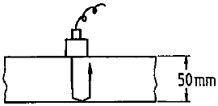
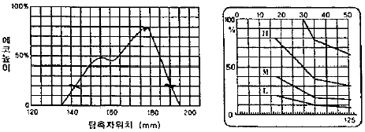

초음파비파괴검사기사 (2017-08-26 기출문제)
1과목: 비파괴검사 개론
1. 전기적 성질을 이용하는 비파괴시험 중 정전기현상을 이용한 시험을 할 수 없는 시험체는?
- 법랑의 균열
- 강 용접부의 균열
- 도자기의 균열
- 유리제품의 균열
(정답률: 71%)

2. 하중을 받는 부품에서 결함의 생성 중에는 검출이 용이하지만 결함의 생성이 정지된 상태에서는 검출이 어려운 비파괴검사법은?
- 초음파탐상시험
- 방사선투과시험
- 와전류탐상시험
- 음향방출시험
(정답률: 79%)
3. 자력에 대한 자속밀도의 비율을 투자율이라 한다. 다음 중 자력아 시험체에 없을 때와 동일점에서 측정될 때의 투자율은 무엇이라 하는가?
- 초기투자율
- 실효투자율
- 재료투자율
- 최대투자율
(정답률: 67%)
4. 관의 내경이 2.5cm이고 내삽형 프로브의 코일외경이 2.0cm이면 와전류탐상검사의 충전율은 몇 %인가?
- 64%
- 80%
- 125%
- 156%
(정답률: 55%)
5. 초음파탐상검사에서 깊이 방향으로 인접한 두 불연속의 분해능을 증가시키기 위해 가장 좋은 방법은?
- 파장을 길게 한다.
- 주파수를 감소시킨다.
- 펄스 지속 시간을 짧게 한다.
- 송신펄스의 강도를 증가시킨다.
(정답률: 40%)
6. Fe-C 상태도에서 탄소 함유량이 0.5%인 아공석강의 A1변태점 직상에서 초석 페라이트의 양은 약 몇 % 인가? (α의 탄소 함량은 0.025%이며, 공석점에서의 탄소 함량은 0.8%이다.)
- 12.9%
- 25.8%
- 38.7%
- 51.6%
(정답률: 37%)
7. 초강인강에서 나타나는 지체파괴(delayed fracture)의 원인에 대한 설명 중 틀린 것은?
- 강재의 강도 수준이 낮을 경우
- 잔류응력과 인장응력이 있을 경우
- 수소를 함유하는 환경 하에 있을 경우
- 미시적, 거시적인 응력집중부가 존재할 경우
(정답률: 50%)
8. 로크웰 경도 시험에서 시험하중이 가장 큰 스케일은?
- A
- B
- C
- D
(정답률: 52%)
9. 주성분이 Cu-An의 종류가 아닌 것은?
- Cartridge brass
- Muntz metal
- Naval brass
- Cupronickel
(정답률: 55%)
10. 내식성을 향상시키기 위한 실용 알루미늄 합금이 아닌 것은?
- Al-Mn 계 합금
- Al-Mg 계 합금
- Al-Ni-Sn 계 합금
- Al-Mg-Si 계 합금
(정답률: 65%)
11. 주철의 용탕에 Fe-Si 등을 접종(inoculartion)시켜 얻을 수 있는 효과는?
- 재질의 강도 증가
- Shill의 깊이 증가
- 흑연의 분포 불균일
- 공정(共晶) cell수 감소
(정답률: 63%)
12. Mg합금 중 엘렉트론(Elektron)합금에 대한 설명으로 옳은 것은?
- 가공용 마그네슘합금으로 Mg-Al 합금에 Ni과 As를 첨가한 합금이다.
- 가공용 마그네슘합금으로 Mg-Zr-Cu 합금에 B를 첨가한 합금이다.
- 주조용 마그네슘합금으로 Mg-Al 합금에 소량의 Zn과 Mn을 첨가한 합금이다.
- 주조용 마그네슘합금으로 Mg-Zr-Cu 합금에 Sn을 첨가한 합금이다.
(정답률: 54%)
13. 화폐용으로 사용되는 스터링 실버(sterling silver) 귀금속 합금의 조성으로 옳은 것은?
- Ag-7.5% Pt합금
- Ag-10% Pd합금
- Ag-7.5% Cu합금
- Ag-10% Zn합금
(정답률: 42%)
14. 금속의 조직량을 측정하는 방법이 아닌 것은?
- 점 측정법
- 면적 측정법
- 직선 측정법
- 절단 측정법
(정답률: 64%)
15. TTT 곡선은 무엇인가?
- 인장곡선
- 소성곡선
- Fe-C곡선
- 항온변태곡선
(정답률: 67%)
16. 용접부의 시험 중 기계적 시험에 속하지 않는 것은?
- 인장시험
- 굽힘시험
- 충격시험
- 침투시험
(정답률: 77%)
17. 용접부 변형 방지를 위한 냉각법에 속하지 않는 것은?
- 살수법
- 억제법
- 석면포 사용법
- 수냉동판 사용법
(정답률: 52%)
18. 접합법의 분류에서 기계적 접합법이 아닌 것은?
- 융접
- 볼트 이음
- 리벳 이음
- 접어 잇기
(정답률: 59%)
19. 아크 쏠림의 방지대책으로 틀린 것은?
- 직류용접을 피하고 교류용접을 한다.
- 용접부가 긴 경우는 후퇴법으로 용접한다.
- 용접봉 끝을 아크 쏠림의 반대편으로 향하게 한다.
- 접지점은 용접부 가까이에 접지하고 긴 아크로 용접한다.
(정답률: 67%)
20. 다음 중 아크용접의 종류에 속하지 않는 것은?
- TIG 용접
- MIG 용접
- 스폿 용접
- 스터드 용접
(정답률: 49%)
2과목: 초음파탐상검사 원리
21. 공진 주파수에서 강도의 증가를 Q라 할 때 분해능이 높은 탐촉자를 선정하고자 한다면 다음 중 Q값은 어떤 조건이어야 하는가?
- Q값이 낮은 것
- Q값이 높은 것
- Q값은 관계없다.
- Q값의 변동이 심한 것
(정답률: 53%)
22. 그림과 같이 두께 50mm 강판을 수직탐상하여 다중반사 도형을 구했다. B1/B2 의 값을 구했더니 8dB 이었다. 이 강판의 초음파의 감쇠정수[dB/mm]는? (단, 진동자의 지향성, 접촉상태의 영향 등 보정은 필요없다.)

- 0.8
- 0.08
- 0.016
- 0.16
(정답률: 54%)
23. 초음파탐상검사에서 A스캔(주사) 시 불감대 영역이란?
- 근거리 음장내에 있는 거리
- 빔 분산의 외측 영역
- 초기 표면 펄스의 폭에 가려진 거리
- 원거리 음장과 근거리 음장 영역 사이의 영역
(정답률: 50%)
24. 동일 재질을 탐상할 때 A, B 두 에코의 높이가 CRT상에 100%와 20%로 나타났다면 이 두 에코 높이의 차이는 몇 dB인가?
- 6dB
- 10dB
- 14dB
- 20dB
(정답률: 48%)
25. 초음파탐상검사에서 결함의 위치 측정 시 고려되어야 할 사항이 아닌 것은?
- 결함이 원거리 음장내에 있을 때
- 시험체와 표준시험편의 음속에 차가 있을 때
- 시험체에 음향이방성이 있을 때
- 시험체가 변형되어 있을 때
(정답률: 60%)
26. 초음파탐상검사에서 수직탐상할 때 원거리음장에 다음 중 분산각이 가장 작은 탐촉자는?
- 직경 1인치에 주파수 2.25 MHz 탐촉자
- 직경 1인치에 주파수 5 MHz 탐촉자
- 직경 1/2인치에 주파수 5 MHz 탐촉자
- 직경 1/2인치에 주파수 2.25 MHz 탐촉자
(정답률: 66%)
27. 초음파 두께 측정기로 구리를 측정하니 10mm였다. 이 측정기로 다른 조건은 변경하지 않고 알루미늄을 측정하면 측정기의 지시치는 얼마로 나타나겠는가? (단, 알루미늄과 구리의 실제 두께는 모두 10mm, 구리의 음속 = 4700m/sec, 알루미늄의 음속=6300/sec 이다.)
- 7.5mm
- 10mm
- 13.4mm
- 15.0mm
(정답률: 39%)
28. 초음파탐상검사에서 표면과는 어느 위치의 결함을 검출하는가?
- 표면 밑 1파장
- 표면 밑 2파장
- 표면 밑 3파장
- 표면 밑 6파장
(정답률: 64%)
29. 초음파탐상검사에 의한 재료의 음향이방성 검증에 대한 설명으로 틀린 것은?
- 재료내에서 초음파의 음속이나 감쇠 등의 초음파 전파특성이 탐상방향에 따라 다른 재료를 음향이방성을 갖는 재료라 부른다.
- 압연강판과 같이 주압연방향(L방향)과 이것에 직각인방향(C방향)사이에 초음파 전파 특성이 현저히 다른 재료에는 음향이방성에 대한 검정이 필요하다.
- 음향이방성을 갖는 재료의 탐상에는 공칭굴절각이 70˚인 탐촉자를 사용한다.
- 음속비의 측정에 의해 음향이방성을 검정할 경우 음속비가 1.02를 넘을 때 음향이방성이 있는 것으로 간주한다.
(정답률: 54%)
30. 에코 A를 4dB올려 에코 B와 동일한 높이로 하면 에코 B의 진폭은 에코 A 진폭의 몇 배인가?
- 1.6배
- 2.6배
- 3배
- 6배
(정답률: 70%)
31. 다음 중 에코높이 비율을 나타낸 것 중 틀린 것은?
- 10 : 1 = 20db
- 100 : 1 = 40db
- 1000 : 1 = 60db
- 100000 : 1 = 120db
(정답률: 60%)
32. 초음파탐상검사에서 수직탐상에 대한 설명으로 옳은 것은?
- 수직탐상의 목적은 결함의 발생원인을 조사하는 것이므로, 결함의 크기나 치수를 조사할 필요는 없다.
- 결함의 위치는 저면에코가 최대로 되었을 때 탐촉자의 직하에 있다.
- 결함까지의 거리는 CRT상의 저면에코 상승위치로부터 알 수 있다.
- 탐상감도의 결정방법에는 시험편방식과 저면에코방식이 있다.
(정답률: 57%)
33. 초음파탐상검사에서 에코높이를 이용하는 방법으로 결함의 크기를 측정하는 방법이 아닌 것은?
- 산란파법
- 결함 끝단에코법
- 탠덤법
- 투과반사법
(정답률: 51%)
34. 초음파탐상검사에서 A주사 표시법에 비해 B주사 표시법의 단점이 아닌 것은?
- 피검체내의 결함이 초음파 빔과 일직선상에 여러 개가 있을 때에는 탐촉자와 제일 가까운 한 개의 결함만 탐상한다.
- 초음파 빔과 탐촉자 주사방향에 수직으로 있는 결함 넓이는 기록할 수 없다.
- 초음파 빔은 원통형이 아닌 원추형이므로 피검체의 저면축 결함이 표면측 결함보다 길게 나타난다.
- 결함의 위치 깊이를 쉽게 알 수 있다.
(정답률: 57%)
35. 초음파탐상에서 시험체 표면에 평행한 내부 결함을 검출하고자 하는 경우 사용하는 탐촉자로 적합한 것은?
- N2Q10N
- B2M14×12A70
- N3M10×10A70AL
- B2M10×10A4525-35
(정답률: 62%)
36. 초음파탐상검사에서 횡파에 대한 설명으로 틀린 것은?
- 입자의 진동이 파의 진행방향에 대해 평행하다.
- 동일한 주파수에서 종파에 비해 짧은 파장을 갖게 된다.
- 동일한 재질에 대해 종파속도의 1/2정도의 속도이다.
- 액체와 기체에서 횡파는 존재하지 않는다.
(정답률: 46%)
37. 초음파탐상검사에서 근거리 음장 공식에 대한 인자가 아닌 것은?
- 진동자의 직경
- 주파수
- 파장
- 진동자에서의 음압
(정답률: 56%)
38. 초음파공명시험에서 1차공면(기본공명)은 시험체의 두께가 음파 파장의 얼마 크기일 때 발생되는가?
- 1/2
- 1
- 1/4
- 2
(정답률: 60%)
39. 초음파현미경 탐상방법의 원리가 아닌 것은?
- 송신부로부터 전기신호는 음향렌즈의 진동자에서 초음파로 변환되고 음향렌즈로 집속되어 시험체에 조사된다.
- 시험체로부터 반사된 초음파는 거의동일한 역 경로로 진동자에 도달한다.
- 전기신호로 변환되어 화면의 휘도 변조신호로 이용된다.
- 2회의 초음파의 송수신으로 화면상의 아주 작은 1개의 화소가 메워지게 된다.
(정답률: 35%)
40. 결함과 유사한 드릴구멍을 가공하여 비교할 수 있도록 한 시험편을 무엇이라 하는가?
- 기준시험편
- 대비시험편
- 평저공시험편
- 공인시험편
(정답률: 66%)
3과목: 초음파탐상검사 시험
41. 초음파가 철강 내부에서 철강과 공기의 계면에 경사각으로 입사할 때 나타나는 현상을 설명한 내용으로 틀린 것은? (단, 철강의 종파 : 5300m/sec, 철강의 횡파 : 3230m/sec. 공기의 종파 : 330m/sec 이다.)
- 종파의 반사음압은 입사각이 68˚일 때 최소치가 되어 거의 87%가 횡파로 변환된다.
- 입사하는 횡파의 굴절각이 30˚가 되면 횡파의 반사음압은 대부분 종파로 변환된다.
- 횡파가 입사할 때 입사각이 33.2˚ 이상이면 횡파는 전부 반사되어 파형변환은 없다.
- 종파가 1차 임계각 이상에서 입사할 때 횡파를 거치지 않고 표면파로 파형변환이 일어난다.
(정답률: 50%)
42. 2개의 경사각 탐촉자를 용접부의 선상에서 전후로 배열하여 각각 송ㆍ수신용으로 하는 초음파탐상 주사법은?
- 진자주사
- 탠덤주사
- 평행주사
- 지그재그주사
(정답률: 64%)
43. 일반적인 경사각 탐촉자에서 발생한 초음파는 시험체 내에서 어떤 파의 형태로 전파되는가?
- 종파
- 횡파
- 판파
- 표면파
(정답률: 61%)
44. 결함의 크기가 초음파 빔 폭보다 큰 경우 결함의 크기를 측정하는 방법으로 틀린 것은?
- DGS 선도법
- 6dB drop법
- 10dB drop법
- L-선 컷 법
(정답률: 48%)
45. 경사각탐상시험에서 시편의 두께가 증가할 경우 스킵거리는? (단, 다른 조건은 동일하다.)
- 감소한다.
- 증가한다.
- 변하지 않는다.
- 1/2씩 감소한다.
(정답률: 54%)
46. 철강 압연품을 수침법으로 초음파탐상검사를 할 때 음압반사율(r)은? (단, 물에서의 음향임피던스 1.5 ×106kg/m2s 철강에서의 음향 임피던스 45.4 × 106kg/m2s 이다.)
- 94%
- 54%
- 32%
- 12%
(정답률: 42%)
47. 초음파탐상검사를 할 때 직접 접촉법이 아닌 것은?
- 표면파시험(surface beam testing)
- 경사각시험(angle beam testing)
- 수직시험(straight beam testing)
- 침지시험(immersion beam testing)
(정답률: 70%)
48. 탠덤주사 및 두 갈래 주사에 사용되는 시험편으로 시험체와 초음파 특성이 유사한 재질로 제작되는 대비시험편은?
- RB-4
- RB-D
- RB-A5
- RB-A7
(정답률: 44%)
49. 펄스반사법 초음파 탐상장치를 사용하여 두께 20mm의 평판 맞대기 강 용접부를 60˚의 경사각 탐촉자로 탐상할 때 탐상기의 시간축 상의 50mm 되는 지점에 에코가 나타났다. 이 에코를 발생시킨 반사체는 탐촉자의 접촉면으로부터 얼마의 깊이에 존재하는가?
- 5mm
- 10mm
- 15mm
- 250mm
(정답률: 38%)
50. 큐리점이 높아 가장 고온에서 사용할 수 있는 진동자 재질은?
- 황산리튬
- 티탄산바륨
- 니오비움산납
- 니오비움산리튬
(정답률: 65%)
51. 판두께 20mm의 맞대기 용접부를 5Z10×10A70을 이용하여 STB-A2에 의해 탐상감도를 조정하고 L 검출레벨로 설정하여 탐상하여 결함에코를 검출하였다. 최대 에코높이는 80%, 그 때의 진행거리는 25mm이었다. 결함길이를 측정하기 위하여 작성한 좌우주사 그래프는 그림과 같다. 결함지시길이는 약 얼마인가? (단, 에코높이 구분선은 그림과 같고 측정점위는 125mm 이다.)

- 28
- 38
- 48
- 88
(정답률: 46%)
52. 초음파 탐상검사에서 이용되는 감도 조절법으로 틀린 것은?
- 저면에코(Back echo)방식
- 감쇠기(Attenuator)이용 방식
- 표준시험편 이용방식
- 대비시험편 이용방식
(정답률: 62%)
53. 공진법으로 시험체의 두께를 측정할 때 기본공진이 일어나는 경우로 옳은 것은?
- 시험체 두께가 사용주파수의 1/3일 때
- 시험체 두께가 사용주파수의 1/2일 때
- 시험체 두께가 사용주파수가 같을 때
- 시험체 두께가 사용주파수의 3배일 때
(정답률: 58%)
54. 초음파 탐상기의 각종 회로에 대한 설명으로 틀린 것은?
- 송신부에서는 수백 볼트 이상의 높은 펄스를 발생시킨다.
- 수신부에서는 수 mV의 전압을 수십 V로 증폭시켜준다.
- 필터를 사용하면 분해능력이 향상되고 S/N비가 낮아진다.
- 수신부에서는 +위상을 -위상으로 바꾸는 역학을 한다.
(정답률: 55%)
55. 일반적으로 강판의 초음파탐상시험의 주 대상이 되는 결함이 아닌 것은?
- 라미네이션
- 비금속 개재물
- 융합 불량
- 내부 균열
(정답률: 36%)
56. 초음파탐상검사를 할 때 기본표시(A-Scan)에서 횡축(가로축)이 의미하는 것은?
- 주파수
- 파장
- 속도
- 반사체까지의 거리
(정답률: 50%)
57. 초음파탐상검사를 할 때 결함의 위치를 측정할 경우 유의해야 할 점으로 틀린 것은?
- 시험체가 근거리음장 내에 있는 경우
- 시험체가 원거리음장 내에 있는 경우
- 결함이 표면에 있는 경우
- 초음파 빔이 결함면에 대해 경사로 입사하는 경우
(정답률: 51%)
58. STB-Al 시험편에 존재하지 않는 것은?
- 반지름 100mm인 원주면
- 직경 50mm인 구멍
- 직경 1.5mm인 관통구멍
- 직경 2mm인 평저공
(정답률: 52%)
59. 초음파 탐상검사에 사용되는 탐촉자의 구성 재료 중 초음파의 감쇠를 크게 하기 위하여 흡음재의 음향임피던스를 조정하는 방법은?
- 흡음재의 두께를 조절한다.
- 진동자의 두께를 조절한다.
- 동조코일의 저항값을 조절한다.
- 흡음재의 금속분말과 플라스틱 비율을 조절한다.
(정답률: 42%)
60. 초음파탐상검사에서 두꺼운 강판의 용접부 검사에 일반적으로 가장 많이 사용괴는 검사법은?
- 공진법
- 투과법
- 펄스에코 반사법
- 수침법
(정답률: 52%)
4과목: 초음파탐상검사 규격
61. 금속재료의 펄스반사법에 따른 초음파탐상시험방법 통칙(KS B 0817)에서 주사범위를 결정할 때 고려대상에 포함되지 않는 것은?
- 흠집의 생성시기
- 흠집의 종류
- 흠집의 방향
- 흠집의 크기
(정답률: 74%)
62. 초음파 탕상시험용 표준시험편(KS B 0831)에서 Al형 표준시험편의 재료 종류로 옳은 것은?
- SM25
- SM45
- SM400
- SNCM439
(정답률: 48%)
63. 보일러 및 압력용기에 대한 초음파탐상검사(ASME Sec.V Art.4)에 따라 용접부 탐상검사에 경사각 탐촉자를 사용할 때 다음 중 일반적으로 이용되는 경사각이 아닌 것은?
- 90˚
- 45˚
- 60˚
- 70˚
(정답률: 65%)
64. 보일러 및 압력용기에 대한 초음파탐상검사(ASME Sec.V Art.4)에서 노증 쪽 용접 융합영역을 검사하려고 한다. 이때 교정 단일 구멍의 기준 레벨 에코 높이는?
- 전체 스크린 높이의 60% ± 5%
- 전체 스크린 높이의 60% ± 10%
- 전체 스크린 높이의 80% ± 5%
- 전체 스크린 높이의 80% ± 10%
(정답률: 51%)
65. 보일러 및 압력용기에 대한 초음파탐상검사(ASME Sec.V Art.4)에 따라 비 배관(non-piping) 맞대기 용접부의 두께가 75mm일 때 기본 교정 블록에서 감도 설정 홀의 직경은?
- 1.5mm
- 2.5mm
- 3mm
- 5mm
(정답률: 17%)
66. 보일러 및 압력용기에 대한 초음파탐상검사(ASME Sec.V Art.4)에 따른 기록 지시 중 불합격 지시에서 반드시 기록하여야 할 사항이 아닌 것은?
- 지시의 종류(균열, 융합불량, 슬래그 등)
- 지시의 위치
- 지시의 발생시기
- 지시의 크기(길이)
(정답률: 62%)
67. 아크용접 강관의 초음파탐상검사 방법(KS D 0252)에서 초음파 탐상장치가 아닌 것은?
- 이송 장치
- 탐상기 보호장치
- 자동 경보 장치
- 탐촉자
(정답률: 44%)
68. 강 용접부의 초음파탐상 시험방법(KS B 0896)에 따라 경사각 탐촉자로 탠덤 탐상 시 공칭 주파수 5MHz, 70˚의 입사점 간 거리는?
- 20mm 이하
- 25mm 이하
- 27mm 이하
- 30mm 이하
(정답률: 16%)
69. 강 용접부의 초음파탐상 시험방법(KS B 0896)에 따라 25mm 평판 맞대기 용접부의 탐상결과 흠의 평가 레벨 M검출 레벨에서 흠에코 높이 Ⅲ영역의 지시길이 10mm의 평가 분류로 옳은 것은?
- 1류
- 2류
- 3류
- 4류
(정답률: 38%)
70. 강 용접부의 초음파탐상 시험방법(KS B 0896)에 따라 판두께가 75mm이상이고 2MHz, 진동자치수 20×20mm인 경사각탐촉자를 사용하는 경우, 흠의 최고 에코 높이가 60%일 때 몇 % 이상의 탐촉자의 이동 거리를 흠 지시길이로 하는가?
- 20%
- 30%
- 40%
- 50%
(정답률: 34%)
71. 강 용접부의 초음파탐상 시험방법(KS B 0896)에서 용접부에 용접 후 열처리에 대한 지정이 있는 경우 합격여부 판정을 위한 탐상 시기는 언제인가?
- 열처리하기 바로 전
- 최종 열처리한 후
- 기계가공하기 전
- 기계가공 후 열처리하기 바로 전
(정답률: 72%)
72. 보일러 및 압력용기에 대한 초음파탐상검사(ASME Sec.V Art.23 SA-609)에 따라 절차 A 평저공 교정 절차에서 이중 탐촉자로 대비시험편을 이용하여 DAC를 작성할 때 기준이 되는 평저공(FBH)의 직경은?
- 2.4mm
- 3.0mm
- 4.4mm
- 6.0mm
(정답률: 41%)
73. 강 용접부의 초음파탐상 시험방법(KS B 0896)에서 경사각 탐상 시 평가의 대상으로 하는 흠은?
- M 검출레벨의 경우 최대 에코높이가 30%를 초과하는 흠
- M 검출레벨의 경우 최대 에코높이가 M선을 초과하는 흠
- L 검출레벨의 경우 최대 에코높이가 M선을 초과하는 흠
- 최대 에코높이가 40%를 초과하는 경우
(정답률: 42%)
74. 강 용접부의 초음파탐상 시험방법(KS B 0896)에 따라 두께 50mm 맞대기 용접부를 초음파 탐상결과 흠의 에코 M 검출 레벨에서 지시에코 Ⅳ영역의 흠 길이 19mm에 대한 평가 분류로 옳은 것은?
- 1류
- 2류
- 3류
- 4류
(정답률: 40%)
75. 보일러 및 압력용기에 대한 초음파탐상검사(ASME Sec.V Art.23 SA-388)에서 단조품을 탐상 시 직접 접촉방법일 때 허용되는 외부가공의 최대 표면 거칠기는 얼마인가?
- 1μm
- 3μm
- 6μm
- 12μm
(정답률: 43%)
76. 건축용 강판 및 평강의 초음파탐상시험에 따른 등급분류와 판정기준(KS D 0040)에서 압연 방향으로 평행하게 주사할 경우 2진동자 수직탐촉자에 의한 결함의 분류 표시 기호 중 “X"의 의미는?
- 흠 에코의 높이가 DL선 이하인 것
- 흠 에코의 높이가 DL선 초과, DM선 이하인 것
- 흠 에코의 높이가 DM선 초과한 것
- 흠 에코의 높이가 DH선 초과한 것
(정답률: 45%)
77. 보일러 및 압력용기에 대한 초음파탐상검사(ASME Sec.V Art.4)에서 규정하는 주사속도는?
- 6인치/처 이하
- 7인치/초 이하
- 8인치/초 이하
- 9인치/초 이하
(정답률: 59%)
78. 알루미늄 막대기 용접부의 초음파 경사각 탐상시험 방법(KS B 0897)에서 1탐촉자법으로 경사각 탐상을 할 때 기본 탐상의 공칭 굴절각은?
- 45˚
- 60˚
- 70˚
- 90˚
(정답률: 57%)
79. ASME Sec. Ⅷ에 따라 용접부 검사 시 기준선(Reference level)의 몇 %를 초과하는 불완전부를 불합격 평가대상으로 하는가?
- 5%
- 10%
- 20%
- 50%
(정답률: 48%)
80. 강 용접부의 초음파탐상 시험방법(KS B 0896)에 따라 판 두께가 20mm인 평판 이음 용접부를 M검출 레벨로 탐상하여 최대 에코높이가 제 Ⅱ영역에 해당하고, 흠의 길이는 20mm로 측정되었다. 이 용접부에 대한 시험 결과의 분류는?
- 1류
- 2류
- 3류
- 4류
(정답률: 22%)